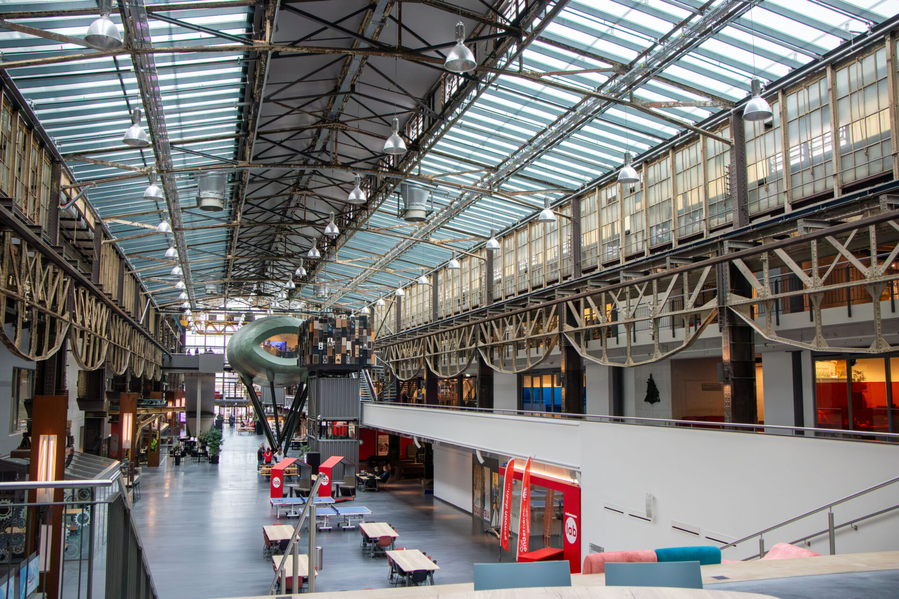
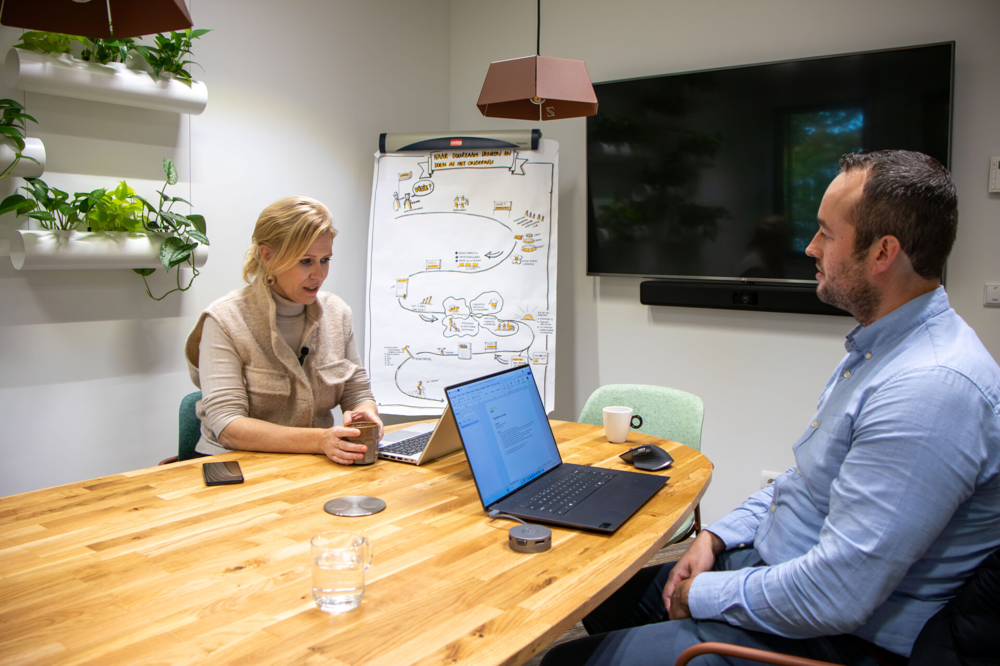
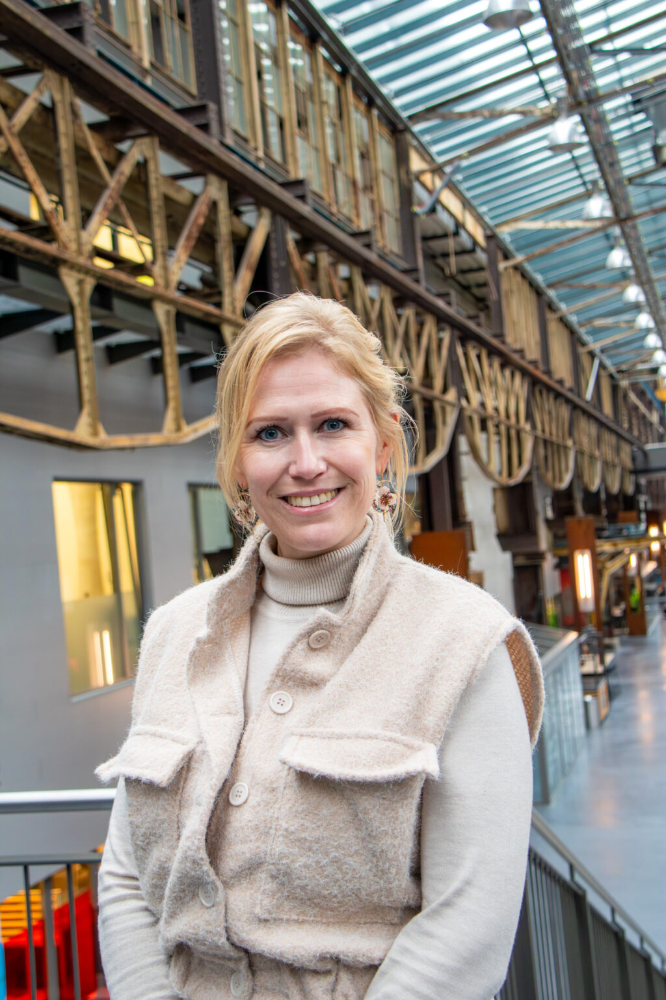
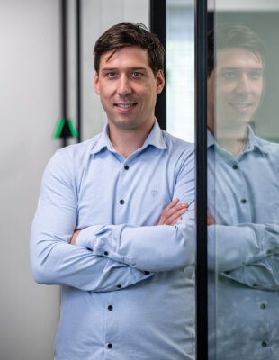

Docenten en studenten klaarstomen voor de digitale bouwpraktijk

Situatie en keuze
Onderwijsinstelling met bouwopleidingen op mbo-niveau. Het onderwijs liep achter op wat bedrijven van starters vragen: BIM, digitaal samenwerken, data.
Niet eerst nieuw lesmateriaal schrijven, maar docenten zelf laten werken met de modellen en afspraken van bedrijven uit de regio.
Docenten geven les vanuit echte projecten; bedrijven leveren casussen en gastlessen; studenten lopen stage met dezelfde afspraken als in de les.
Onderwijs dat aansluit op wat starters in bedrijven aantreffen. Effectmeting onder bedrijven volgt; cijfers pas na bevestiging door ROC van Twente.
Train-de-trainer werkt alleen als docenten tijd krijgen om het zelf te doen, niet alleen om het te horen.

“Onze studenten werken nu met dezelfde modellen en afspraken als de bedrijven waar ze straks aan de slag gaan.”

Wendy Steggink · Opleidingsmanager BouwHerkenbaar? Bel Herwin of Melvin.
Elke organisatie is anders, de onderliggende vraag zelden. Bel Melvin voor een gesprek over jullie situatie, of bekijk hoe wij werken.
Wat betekent dit voor jouw organisatie?
Een vraag over AI, digitalisering of de ontwikkeling van je mensen? Bel, mail of WhatsApp. Je krijgt gewoon iemand uit het team die de inhoud kent, op werkdagen binnen een uur.
Op werkdagen reageren we dezelfde dag. Liever eerst zelf kijken? Doe de zelfscan.